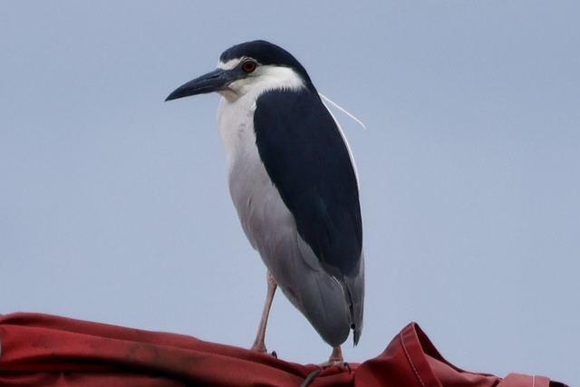
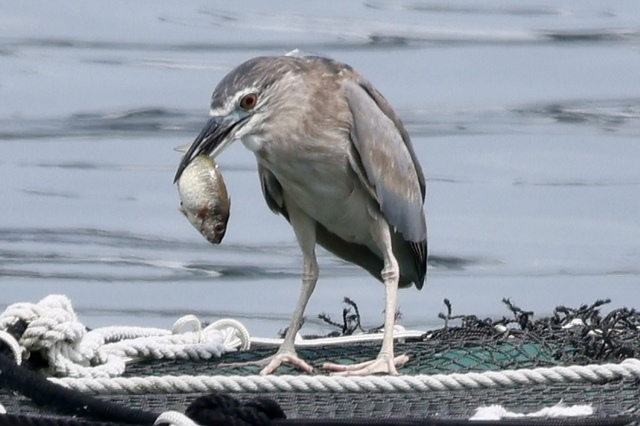
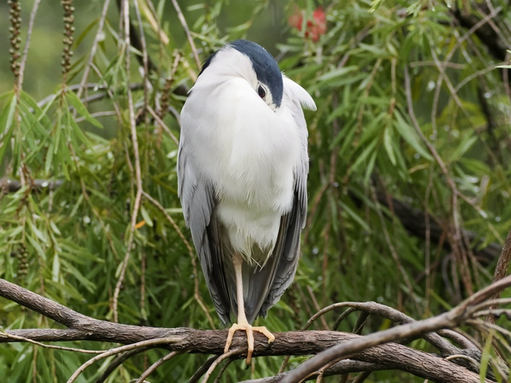
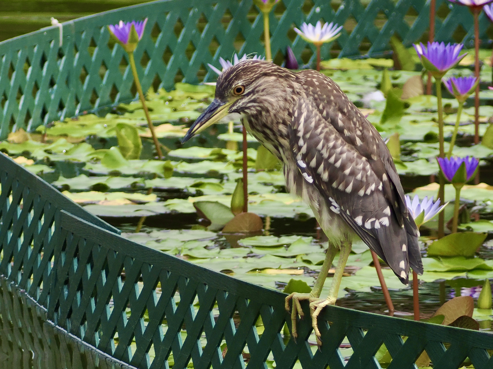

Black-crowned Night Heron
Nycticorax nycticorax
Order: Pelecaniformes
Family: Ardeidae

Common heron with black crown and back, red eyes and a stray white feather on the head.

I am always surprised that herons can eat fish that look too big for their throats.

Oh to sleep so snugly...

Immature is overall brown with paler spots.